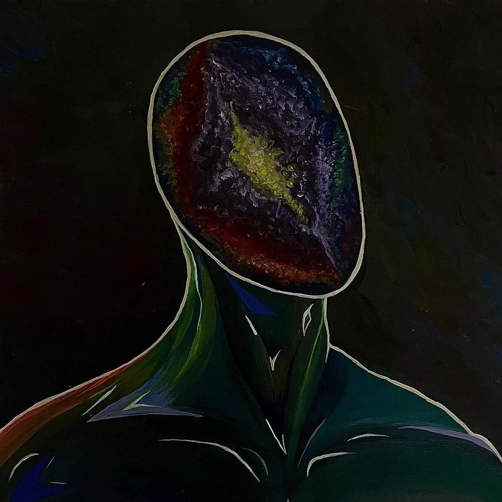

I'm AfzoodNaaz Surati, a 24 year old Software Engineering student, currently pursuing my 2nd Bachelors Degree at Gisma University of Applied Sciences in Potsdam, Germany. I'm originally from India but was born and raised in Abu Dhabi, U.A.E. I'm an inquisitive and energetic computer science specialist skilled in leadership, with a strong foundation in mathematics, cross-platform coding, physics and academic writing.
I am constantly exploring beyond the classroom and work settings by learning new languages, earning certifications in the field of computer science and by experimenting with trial personal projects. My main subjects of interests in tech are Machine Learning in AI and Ethical Hacking and Game Design. I have hands-on working experience across software development and analysis and am seeking to leverage skills in collaboration, communication, and development as a programmer.
In addition, I also have a deep appreciation for art with a strong background in painting and AV editing. In my free time, I enjoy reading, gaming and swimming. I am eager for the opportunities to learn, build and advance my skillset by working on projects that have a positive impact on my career as well as the world of Tech.
I am extremely passionate about creative and performative art in all of it's forms. Dancing is one of my favourite forms of expression and it's been a driving force throughout my childhood. I have studied and performed ballet and contemporary dance for 17 years of my life. My parents have always encouraged me to allocate a sufficient amount of my time to extra-curricular activities, which have pushed me into my several hobbies like dancing, painting, DJing and swimming.
It's been harder to find time for all of my hobbies my early 20's with school and work, so painting, in particular, has become my favourite creative outlet. I'm a self-taught artist with just over 2 years of experience and one of the first projects I worked on was to combine my knowledge in Computer Science and Art to create a beautiful website for all my art. Here's a small glimpse into that journey:

A JavaScript-based weather web application that provides real-time city weather data and crocodile habitat weather using the Open-Meteo API. The application includes input validation, error handling, and dynamic UI updates.
EcoWeather AppEmail: afzood.naaz@outlook.com
Student Email: afzood.surati@gisma-student.com
Primary Phone: +49 174 6167199
Secondary Phone: +971 528494485